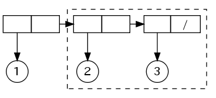

Lispのデータ構造
Table of Contents
1 Lispのデータ構造
Lispにおけるドット対(consセル)とリストのデータ構造について説明する．
2 ドット対
Lispにおいて，基本的なデータ構造はドット対 (dotted pair)である． ドット対はconsセルと呼ばれることもある．
ドット対は，cons 関数によって作成される．
(cons 1 2) (1 . 2)
(cons 1 2) により，数値1と数値2のドット対が作成されている． ドット対は (1 . 2) のように表示され， 左側は car 要素，右側は cdr 要素と呼ばれる．
ドット対を以下のように図示することにする．
丸はアトム(数値や記号)を表し，箱がドット対を表している． 箱の左側がドット対の左側の要素 (carの部分)， 右側が右側の要素 (cdrの部分)に対応する．
(cons (cons 1 2) (cons 3 4)) で作成される データ構造 ((1 . 2) . (3 . 4)) を図示すると以下のようになる．
3 リスト
以下は (1 . nil) で表されるデータ構造の図示である．
nil を要素とするドット対は，頻繁に利用するので，
セル内に / を書いて表すことにする．
このようにcdr要素がnil (空リスト)となっているドット対は， リストと呼ばれる．
すなわち上のデータ構造は (1) という長さ1のリストを表現していると考える．
(cons 1 nil) (1)
つまり，(1) と (1 . nil) の内部データ構造は完全に同一であり， 比較しても等しくなる．
(equal '(1 . nil) '(1)) t
同様に，リスト (1 2 3) をドット対で表すと (1 . (2 . (3 . nil))) となる． 以下では，ドット対を左右に並べてわかりやすく表示している．
この図から，(1 2 3) すなわち (1 . (2 . (3 . nil))) のcdrが， (2 3) すなわち (2 . (3. nil)) であることが良くわかる．
(cdr '(1 2 3)) (2 3)

4 CARとCDRの語源
最初のLisp処理系はIBM 704上で実装された． IBM 704の1ワードは36ビットで， 3ビットのprefix部，15ビットのdecrement部， 3ビットのtag部，15ビットのaddress部から構成されていた． Lispのconsセルが1ワードで表現され， address部にcar部分が，decrement部にcdr部分が格納されたため， それぞれを取り出す命令として CAR (Contents of Address part of Register), CDR (Contents of Decrement part of Register)が使用された．
- History of Lisp (by John McCarthy)